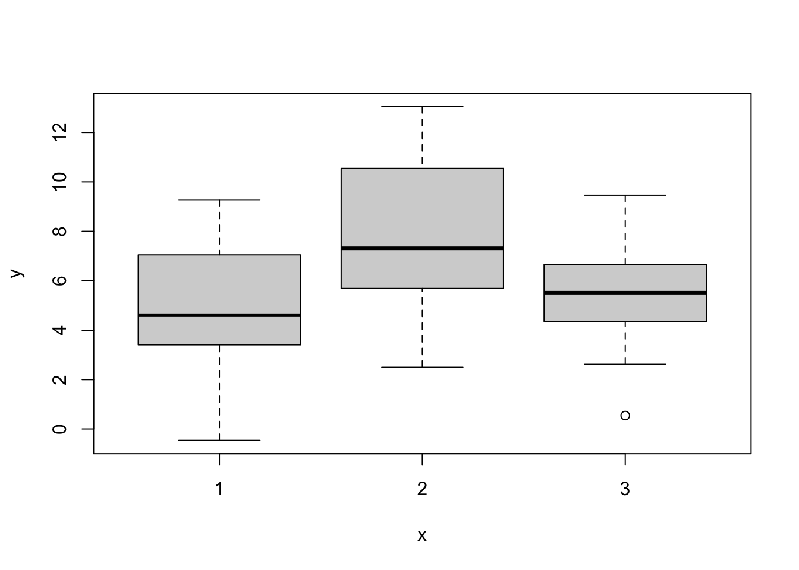
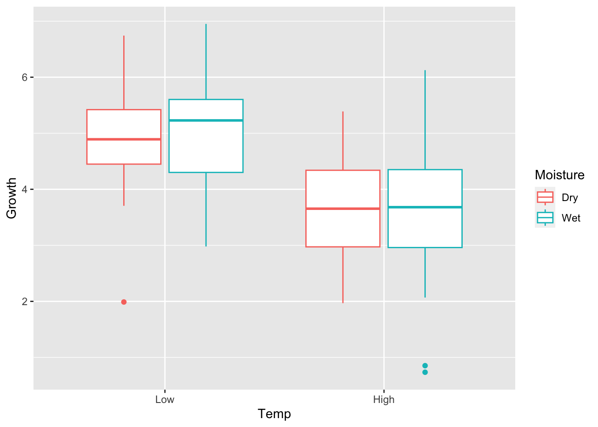

Please download and print the lecture materials from Bblearn. After lectures, the recordings will appear in the Bblearn Collaborate Ultra section.
8.2 One-way ANOVA
Remember that Analysis of Variance (ANOVA) is using linear regression to analyze how discrete input variables affect an outcome. Because the input variables are comprised of discrete “levels” (e.g., treatment groups), we are really comparing how the mean of an outcome varies among discrete groups. This is therefore a generalization of two-sample \(t\)-tests to the case of more than two samples/groups.
One-way ANOVA is the special case in which we only have one input variable, which has more than two “levels”. The ANOVA linear model can be written in several ways, but for me the easiest way to think about is as follows: \[y_{i,l} = \mu_l + \epsilon_{i,l}\]\[\epsilon \sim N(0, \sigma^2 I)\]
In this case \(l = 1,\dots,L\), where \(L\) is the number of levels in the input variable \(x\), and \(\mu_l\) is the mean outcome of group level, \(l\). Thus, each data observation \(y_{i,l}\) varies about a group level mean, with residuals \(\epsilon_{i,l}\), which are normally and independently distributed.
Perhaps this is easier to visualize and see the code. Let’s simulate a case in which we have a single input variable \(x\) that has 3 levels.
set.seed(5)n_levels=3n_obs_per_level=25# Construct Xx=rep(c(1:n_levels), each =n_obs_per_level)# Assign group-wise meansmus=NULLmus[1]=5.0mus[2]=7.5mus[3]=5.8sigma=2.5# residual sigma# Simulate data obsy=NULLfor(iin1:length(x)){this_level=x[i]y[i]=mus[this_level]+# residual deviation from group-wise mean:rnorm(1, mean =0, sd =sigma)}# Store in data frameone_way_df=data.frame( y =y, x =factor(x)# store as factor/categorical)# Plot the means:## Defaults to boxplot() when x is discreteplot(y~x, data =one_way_df)

We can see that - at least visually - level 2 has a higher mean outcome than the other levels (e.g., \(\bar{y}_2\) seems largest). Let’s run the ANOVA model and see the summary.
# Use the aov() functionm_one_way=aov(y~1+x, data =one_way_df)summary(m_one_way)
Df Sum Sq Mean Sq F value Pr(>F)
x 2 125.5 62.74 10.32 0.000115 ***
Residuals 72 437.9 6.08
---
Signif. codes: 0 '***' 0.001 '**' 0.01 '*' 0.05 '.' 0.1 ' ' 1
8.2.1 Manually calculate \(F\)
As we can see, the aov() function is using an \(F\)-test to determine if any of the group-wise means differ from the global mean (see lecture materials on this topic). Indeed, based on the \(p\)-value, at least one group-wise mean is different. To verify our understand, as usual, let’s manually calculate the \(F\) test statistic and \(p\)-value.
# First, we need to run the "null" model (intercept only)m_one_way_null=lm(y~1, data =one_way_df)# Extract the residuals (errors)resid_full=m_one_way$residualsresid_null=m_one_way_null$residuals# Sum of Square Errors (SSE)sse_full=crossprod(resid_full)sse_null=crossprod(resid_null)# degrees of freedomn_obs=length(y)df_full=n_obs-n_levelsdf_null=n_obs-1# Calculate F_statf_test=((sse_null-sse_full)/(df_null-df_full))/(sse_full/df_full)# Degrees of freedom for the F distribution:df_numerator=df_null-df_fulldf_denominator=df_fullp_one_way=1-pf(f_test, df1 =df_numerator, df2 =df_denominator)# Compare to anova()f_test; p_one_way
We see that our manual calculation of \(F\) and the corresponding \(p\)-value match with the output of the aov() function, so we can verify we are understanding what aov() is doing.
8.2.2 Tukey HSD
But, which specific means differ from each other? To know this, we need to compute all pairwise differences between the group-wise means. Remember that for \(L\) number of groups, we have \(L(L-1)/2\) number of pairwise comparisons. We want to correct for multiple comparisons, so we don’t inflate our risk of Type I errors. Therefore, we’ll conduct a Tukey Honest Significant Difference (HSD) test.
Tukey multiple comparisons of means
95% family-wise confidence level
Fit: aov(formula = y ~ 1 + x, data = one_way_df)
$x
diff lwr upr p adj
2-1 2.9796804 1.310442 4.6489184 0.0001710
3-1 0.5570861 -1.112152 2.2263241 0.7050400
3-2 -2.4225942 -4.091832 -0.7533562 0.0024902
This test is looking at pairwise differences. For instance 2-1 is the difference between \(x\) levels 2 and 1, and so on. The output reports the raw difference in means as diff, and then reports the lower and upper confidence limits of this difference as lwr and upr. These default to 95% confidence intervals, though the user can specify an option in the function to change this percentage confidence. Then the output reports the p adj, which is the adjusted \(p\)-value, adjusting for multiple comparisons. Here, we can conclude that while levels 1 and 3 are not different from one another, level 2 is different from both levels 1 and 3. This makes sense when we look at the boxplot (again).
How does the Tukey HSD adjust for multiple comparisons? It uses a special hypothesis test, which has an associated probability distribution, tukey. Remember that we calculate a test statistic, \(q\) for the difference between levels \(i\) and \(j\): \[q_{i,j} = \frac{|\bar{y}_i - \bar{y}_j|}{\sqrt{\hat{\sigma}^2_p/n}}\] Here, \(\hat{\sigma}^2_p\) is the pooled variance of the whole outcome data set, \(y\), and \(n\) is the number of observations per level. This is why a balanced design is important; the test assumes that each level has the same number of observations.
Let’s manually calculate the \(p\)-value for the difference between group levels 2 and 1.
# Need to extract the data observations associated with all x levels, separatelythese_x_1=which(x==1)these_x_2=which(x==2)these_x_3=which(x==3)y_1=y[these_x_1]y_2=y[these_x_2]y_3=y[these_x_3]# Calculate pooled variance for whole data set# Notice how this is not the same as var(y)pooled_var=(var(y_1)+var(y_2)+var(y_3))/3# Calculate q test statisticq_test=abs(mean(y_1)-mean(y_2))/sqrt(pooled_var/n_obs_per_level)q_test
[1] 6.041317
# Degrees of freedom for q test statdf_q=n_obs-n_levels# Calculate p-valuep_2v1=ptukey(q_test, nmeans =3, df =df_q, lower.tail =FALSE)p_2v1
[1] 0.0001710377
We can see this \(p\)-value matches the first p adj from the TukeyHSD() output.
8.3 Two-way ANOVA
Two-way ANOVA is the special case in which we have exactly two input variables, each of which has two or more “levels”. The two-way ANOVA linear model can be written in several ways. We’ll start with the easiest case in which each of the two input variables only has two levels. This refers to a “2x2” experimental design. To be concrete, we’ll use an example. We will simulate data for plant growth in which we manipulate Temperature (Low or High) and soil Moisture (Dry or Wet). We apply the 2x2 combination of these treatments which leads to four total treatments (e.g., Low-Dry, Low-Wet, etc.). We will apply each treatment combination to 25 plants and measure the outcome of Growth.
In the following model structure, we will code Temperature as Low == 0 and High == 1, and we will code soil Moisture as Dry == 0 and Wet == 1.
In the model structure, \(\mu\) is a global mean for \(y\) (i.e., across all treatments). Then, this global mean can be altered (i.e. affected by) the treatment combinations. \(\beta_{\text{Temp}}\) and \(\beta_{\text{Moist}}\) are the “main” effects and \(\beta_{\text{Intx}}\) is the interactive effect. Temp and Moist are binary indicator variables (0/1), so, for instance, if Temperature is Low, Temp == 0, and so on. This means that \(\beta_{\text{Temp}}\) only gets added to the global mean when Temp == 1 (i.e., Temperature is High), and so on. The \(\beta_{\text{Intx}}\) would get added to the global mean if both Temp and Moist are 1, so High Temperature and Wet Moisture.
8.3.1 Only main effects
First, let’s simulate a case in which we only have main effects, no interaction. Specifically, we will assume that the plant Growth declines under High Temperature, but that there is no effect of soil Moisture. Also, for data visualization, we will use the ggplot2 package, because it is easier to customize.
library(ggplot2)# 2x2 design# Replicated 25 times# Low, High (0, 1)n_reps=25Temp=rep(0:1, each =n_reps*2)# Low, High (0, 1)Moisture=c(rep(0:1, each =n_reps),rep(0:1, each =n_reps))# Simulate different effects:set.seed(8)# Just main effectglobal=5beta_t=-1.25beta_m=0beta_intx=0sigma=1.0y=NULLfor(iin1:length(Temp)){y[i]=global+beta_t*Temp[i]+beta_m*Moisture[i]+beta_intx*Temp[i]*Moisture[i]+rnorm(1, mean =0, sd =sigma)}# Store as data frametwo_way_df1=data.frame( Growth =y, Temp =factor(Temp, levels =c(0,1), labels =c("Low", "High")), Moisture =factor(Moisture, levels =c(0,1), labels =c("Dry", "Wet")))ggplot(two_way_df1)+geom_boxplot(aes(x =Temp, y =Growth, color =Moisture))

Here, it is visually clear that higher temperatures lead to lower plant growth, but there is no clear effect of soil moisture, just as we simulated.
Let’s run the ANOVA model and see if the output makes sense.
summary(aov(Growth~Temp+Moisture+Temp:Moisture, data =two_way_df1))
Indeed, we only see a main effect of Temp, and no main effect of Moisture, and no interactive effect (Temp:Moisture).
8.3.2 Interactive effect
Now will simulate a case in which we have a main effect of temperature, similar to the above (Growth declines at High Temp). We will also add a positive interactive effect. This means that the effect of specific effects of temperature on growth will depend on the soil moisture content. Specifically, with a positive interactive effect, if Temperature is High and Moisture is Wet, then we will get an increase in Growth, rather than a decline. Let’s see what this looks like visually.
# INTERACTIONglobal=5beta_t=-1.25beta_m=0beta_intx=2.5sigma=1.0set.seed(5)y=NULLfor(iin1:length(Temp)){y[i]=global+beta_t*Temp[i]+beta_m*Moisture[i]+beta_intx*Temp[i]*Moisture[i]+rnorm(1, mean =0, sd =sigma)}# Store as data frametwo_way_df2=data.frame( Growth =y, Temp =factor(Temp, levels =c(0,1), labels =c("Low", "High")), Moisture =factor(Moisture, levels =c(0,1), labels =c("Dry", "Wet")))ggplot(two_way_df2)+geom_boxplot(aes(x =Temp, y =Growth, color =Moisture))
What wee see is that the effect of Temperature depends on the value of soil Moisture. In this case, as Temperature moves from Low to High, plant Growth declines if the soil is Dry, but Growth increases if the soil is Wet.
But those trends are just visual at this point. How do we quantify whether specific comparisons are statistically significant? We will again use the Tukey HSD! First, run the ANOVA and verify that there is a significant interaction.
aov_intx=aov(Growth~Temp+Moisture+Temp:Moisture, data =two_way_df2)summary(aov_intx)
The important part of the out put is $'Temp:Moisture', which shows the pairwise tests of the interactive effects. See if you can understand which differences are statistically significant, after accounting for multiple comparisons.
Source Code
# ANOVA {#sec-anova}## Lecture materialPlease download and print the lecture materials from [Bblearn](https://bblearn.nau.edu/){target="_blank"}. After lectures, the recordings will appear in the Bblearn Collaborate Ultra section.## One-way ANOVARemember that Analysis of Variance (ANOVA) is using linear regression to analyze how discrete input variables affect an outcome. Because the input variables are comprised of discrete "levels" (e.g., treatment groups), we are really comparing how the mean of an outcome varies among discrete groups. This is therefore a generalization of two-sample $t$-tests to the case of more than two samples/groups. One-way ANOVA is the special case in which we only have one input variable, which has more than two "levels". The ANOVA linear model can be written in several ways, but for me the easiest way to think about is as follows:$$y_{i,l} = \mu_l + \epsilon_{i,l}$$$$\epsilon \sim N(0, \sigma^2 I)$$In this case $l = 1,\dots,L$, where $L$ is the number of levels in the input variable $x$, and $\mu_l$ is the mean outcome of group level, $l$. Thus, each data observation $y_{i,l}$ varies about a group level mean, with residuals $\epsilon_{i,l}$, which are normally and independently distributed. Perhaps this is easier to visualize and see the code. Let's simulate a case in which we have a single input variable $x$ that has 3 levels. ```{r}set.seed(5)n_levels =3n_obs_per_level =25# Construct Xx =rep(c(1:n_levels), each = n_obs_per_level)# Assign group-wise meansmus =NULLmus[1] =5.0mus[2] =7.5mus[3] =5.8sigma =2.5# residual sigma# Simulate data obsy =NULLfor(i in1:length(x)){ this_level = x[i] y[i] = mus[this_level] +# residual deviation from group-wise mean:rnorm(1, mean =0, sd = sigma)}# Store in data frameone_way_df =data.frame(y = y,x =factor(x) # store as factor/categorical)# Plot the means:## Defaults to boxplot() when x is discreteplot(y~x, data = one_way_df)```We can see that - at least visually - level 2 has a higher mean outcome than the other levels (e.g., $\bar{y}_2$ seems largest). Let's run the ANOVA model and see the summary. ```{r}# Use the aov() functionm_one_way =aov(y ~1+ x, data = one_way_df)summary(m_one_way)```### Manually calculate $F$As we can see, the `aov()` function is using an $F$-test to determine if any of the group-wise means differ from the global mean (see lecture materials on this topic). Indeed, based on the $p$-value, at least one group-wise mean is different. To verify our understand, as usual, let's manually calculate the $F$ test statistic and $p$-value.```{r}# First, we need to run the "null" model (intercept only)m_one_way_null =lm(y ~1, data = one_way_df)# Extract the residuals (errors)resid_full = m_one_way$residualsresid_null = m_one_way_null$residuals# Sum of Square Errors (SSE)sse_full =crossprod(resid_full)sse_null =crossprod(resid_null)# degrees of freedomn_obs =length(y)df_full = n_obs - n_levelsdf_null = n_obs -1# Calculate F_statf_test = ((sse_null - sse_full)/(df_null - df_full)) / (sse_full/df_full)# Degrees of freedom for the F distribution:df_numerator = df_null - df_fulldf_denominator = df_fullp_one_way =1-pf(f_test,df1 = df_numerator,df2 = df_denominator)# Compare to anova()f_test; p_one_waysummary_aov =summary(m_one_way)summary_aov[[1]]$`F value`; summary_aov[[1]]$`Pr(>F)````We see that our manual calculation of $F$ and the corresponding $p$-value match with the output of the `aov()` function, so we can verify we are understanding what `aov()` is doing.### Tukey HSDBut, which specific means differ from each other? To know this, we need to compute all pairwise differences between the group-wise means. Remember that for $L$ number of groups, we have $L(L-1)/2$ number of pairwise comparisons. We want to correct for multiple comparisons, so we don't inflate our risk of Type I errors. Therefore, we'll conduct a Tukey Honest Significant Difference (HSD) test. ```{r}TukeyHSD(m_one_way)```This test is looking at pairwise differences. For instance `2-1` is the difference between $x$ levels 2 and 1, and so on. The output reports the raw difference in means as `diff`, and then reports the lower and upper confidence limits of this difference as `lwr` and `upr`. These default to 95% confidence intervals, though the user can specify an option in the function to change this percentage confidence. Then the output reports the `p adj`, which is the adjusted $p$-value, adjusting for multiple comparisons. Here, we can conclude that while levels 1 and 3 are not different from one another, level 2 is different from both levels 1 and 3. This makes sense when we look at the boxplot (again).```{r}plot(y~x, data = one_way_df)```### Manually calculate $q$How does the Tukey HSD adjust for multiple comparisons? It uses a special hypothesis test, which has an associated probability distribution, `tukey`. Remember that we calculate a test statistic, $q$ for the difference between levels $i$ and $j$:$$q_{i,j} = \frac{|\bar{y}_i - \bar{y}_j|}{\sqrt{\hat{\sigma}^2_p/n}}$$Here, $\hat{\sigma}^2_p$ is the *pooled* variance of the whole outcome data set, $y$, and $n$ is the number of observations *per level*. This is why a **balanced design** is important; the test assumes that each level has the same number of observations. Let's manually calculate the $p$-value for the difference between group levels 2 and 1. ```{r}# Need to extract the data observations associated with all x levels, separatelythese_x_1 =which(x ==1)these_x_2 =which(x ==2)these_x_3 =which(x ==3)y_1 = y[these_x_1]y_2 = y[these_x_2]y_3 = y[these_x_3]# Calculate pooled variance for whole data set# Notice how this is not the same as var(y)pooled_var = (var(y_1)+var(y_2)+var(y_3))/3# Calculate q test statisticq_test =abs(mean(y_1) -mean(y_2)) /sqrt(pooled_var/n_obs_per_level)q_test# Degrees of freedom for q test statdf_q = n_obs - n_levels# Calculate p-valuep_2v1 =ptukey(q_test, nmeans =3,df = df_q, lower.tail =FALSE)p_2v1```We can see this $p$-value matches the first `p adj` from the `TukeyHSD()` output. ## Two-way ANOVATwo-way ANOVA is the special case in which we have exactly two input variables, each of which has two or more "levels". The two-way ANOVA linear model can be written in several ways. We'll start with the easiest case in which each of the two input variables only has two levels. This refers to a "2x2" experimental design. To be concrete, we'll use an example. We will simulate data for plant growth in which we manipulate Temperature (`Low` or `High`) and soil Moisture (`Dry` or `Wet`). We apply the 2x2 combination of these treatments which leads to four total treatments (e.g., Low-Dry, Low-Wet, etc.). We will apply each treatment combination to 25 plants and measure the outcome of Growth. In the following model structure, we will code Temperature as `Low == 0` and `High == 1`, and we will code soil Moisture as `Dry == 0` and `Wet == 1`. $$y_{i} = \mu + \beta_{\text{Temp}}\text{Temp} + \beta_{\text{Moist}}\text{Moist} + \beta_{\text{Intx}}\text{Temp}\text{Moist} + \epsilon_{i,l}$$$$\epsilon \sim N(0, \sigma^2 I)$$In the model structure, $\mu$ is a global mean for $y$ (i.e., across all treatments). Then, this global mean can be altered (i.e. affected by) the treatment combinations. $\beta_{\text{Temp}}$ and $\beta_{\text{Moist}}$ are the "main" effects and $\beta_{\text{Intx}}$ is the interactive effect. `Temp` and `Moist` are binary indicator variables (0/1), so, for instance, if Temperature is Low, `Temp == 0`, and so on. This means that $\beta_{\text{Temp}}$ only gets added to the global mean when `Temp == 1` (i.e., Temperature is High), and so on. The $\beta_{\text{Intx}}$ would get added to the global mean if both Temp and Moist are 1, so `High` Temperature and `Wet` Moisture. ### Only main effectsFirst, let's simulate a case in which we only have main effects, no interaction. Specifically, we will assume that the plant Growth declines under `High` Temperature, but that there is no effect of soil Moisture. Also, for data visualization, we will use the `ggplot2` package, because it is easier to customize. ```{r}library(ggplot2)# 2x2 design# Replicated 25 times# Low, High (0, 1)n_reps =25Temp =rep(0:1, each = n_reps*2)# Low, High (0, 1)Moisture =c(rep(0:1, each = n_reps),rep(0:1, each = n_reps))# Simulate different effects:set.seed(8)# Just main effectglobal =5beta_t =-1.25beta_m =0beta_intx =0sigma =1.0y =NULLfor(i in1:length(Temp)){ y[i] = global + beta_t * Temp[i] + beta_m * Moisture[i] + beta_intx * Temp[i] * Moisture[i] +rnorm(1, mean =0, sd = sigma)}# Store as data frametwo_way_df1 =data.frame(Growth = y,Temp =factor(Temp, levels =c(0,1), labels =c("Low", "High")),Moisture =factor(Moisture, levels =c(0,1), labels =c("Dry", "Wet")))ggplot(two_way_df1) +geom_boxplot(aes(x = Temp, y = Growth, color = Moisture))```Here, it is visually clear that higher temperatures lead to lower plant growth, but there is no clear effect of soil moisture, just as we simulated. Let's run the ANOVA model and see if the output makes sense.```{r}summary(aov(Growth ~ Temp + Moisture + Temp:Moisture,data = two_way_df1))```Indeed, we only see a main effect of `Temp`, and no main effect of `Moisture`, and no interactive effect (`Temp:Moisture`).### Interactive effectNow will simulate a case in which we have a main effect of temperature, similar to the above (Growth declines at `High` Temp). We will also add a positive interactive effect. This means that the effect of specific effects of temperature on growth will depend on the soil moisture content. Specifically, with a positive interactive effect, if Temperature is `High` and Moisture is `Wet`, then we will get an increase in Growth, rather than a decline. Let's see what this looks like visually. ```{r}# INTERACTIONglobal =5beta_t =-1.25beta_m =0beta_intx =2.5sigma =1.0set.seed(5)y =NULLfor(i in1:length(Temp)){ y[i] = global + beta_t * Temp[i] + beta_m * Moisture[i] + beta_intx * Temp[i] * Moisture[i] +rnorm(1, mean =0, sd = sigma)}# Store as data frametwo_way_df2 =data.frame(Growth = y,Temp =factor(Temp, levels =c(0,1), labels =c("Low", "High")),Moisture =factor(Moisture, levels =c(0,1), labels =c("Dry", "Wet")))ggplot(two_way_df2) +geom_boxplot(aes(x = Temp, y = Growth, color = Moisture))```What wee see is that the effect of Temperature depends on the value of soil Moisture. In this case, as Temperature moves from `Low` to `High`, plant Growth declines if the soil is `Dry`, but Growth increases if the soil is `Wet`. But those trends are just visual at this point. How do we quantify whether specific comparisons are statistically significant? We will again use the Tukey HSD! First, run the ANOVA and verify that there is a significant interaction.```{r}aov_intx =aov(Growth ~ Temp + Moisture + Temp:Moisture,data = two_way_df2)summary(aov_intx)```Indeed, the interaction is significant, so now we need to figure out which specific differences among covariate levels exist. ```{r}TukeyHSD(aov_intx)```The important part of the out put is `$'Temp:Moisture'`, which shows the pairwise tests of the interactive effects. See if you can understand which differences are statistically significant, after accounting for multiple comparisons.